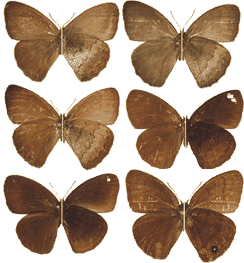

The systematics of the genus Forsterinaria Gray, 1973 (Nymphalidae, Satyrinae)

Forsterinaria Gray, 1973, is a genus placed in Euptychiina, that has received little taxonomic attention, there being in existence only one publication that investigated part of the species in the genus and some dispersed publications dealing with higher level taxonomy and nomenclature. Forsterinaria is a small group of medium-sized butterflies with wide distribution in the Neotropics, occurring from Mexico to Panama, and in South America along the Andes, from Venezuela to Bolivia, and southeastern Brazil, Paraguay and northeastern Argentina. The species that occur in Peru inhabit montane forests in northwestern and eastern slopes of the Andes, in habitats where plants of the genus Chusquea occur, the probable hostplant of the larvae. To date, 14 valid species had been considered in the genus, most of them occurring in Peru, but there are several undescribed species and obvious cases of synonymy. As there is no monographic publication that includes all the species in the genus, we present a taxonomic review of the genus which includes several new taxa for science.
Resources
Peña, C. & G. Lamas. 2005. Revision of the butterfly genus
Forsterinaria Gray, 1973 (Lepidoptera: Nymphalidae, Satyrinae).
Revista peruana de Biología 12(1): 5-48. |
BibTeX |